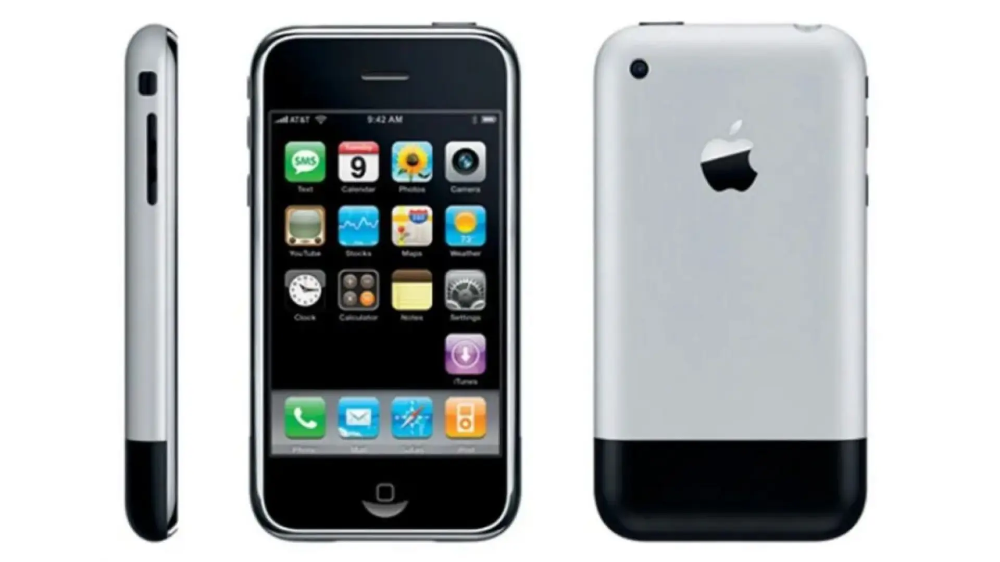
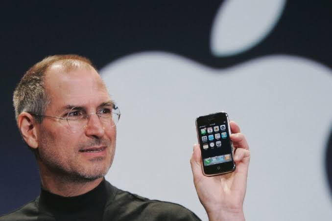

A continuacion veremos 8 inventos que cambiaron las reglas del juego

Creador/Empresa: Apple (presentado por Steve Jobs)

Descripcion breve:Revolucionó la industria de la telefonía al combinar un teléfono móvil, un iPod con pantalla táctil y un navegador de internet en un solo dispositivo. Eliminó el teclado físico tradicional por una interfaz multitáctil e impulsó la era moderna de las aplicaciones móviles (smartphones).